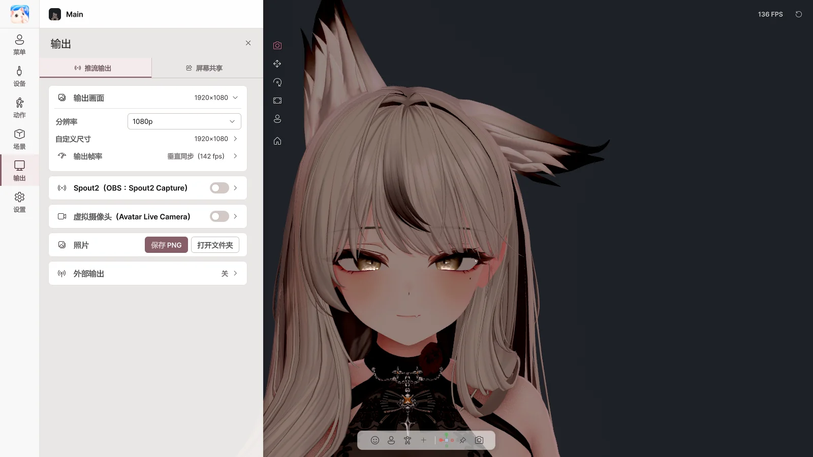

9. 输出#
在 输出 页面中将角色画面发送到其他程序。标签页有 推流输出 和 屏幕共享 两个。
| 发送目标 | 方法 |
|---|---|
| OBS（透明背景） | Spout2 |
| Discord · Zoom · Teams 的摄像头 | 虚拟摄像头 |
| Discord 游戏直播 | 屏幕共享 |
| 其他动作应用 | VMC 输出 |
| 照片 | 保存 PNG |
输出中只包含角色和背景，不包含 Avatar Live 的菜单。即使最小化窗口或隐藏到托盘，输出也会继续。
推流输出#

输出画面#
| 项目 | 作用 |
|---|---|
| 分辨率 | 720p · 1080p · 1440p · 4K · 竖屏 |
| 自定义尺寸 | 任意尺寸 |
| 输出帧率 | 输出的帧率 |
Basic 最高 1080p，并显示水印。Pro 最高 4K，无水印。
Spout2 → OBS#
- 开启 Spout2。
- 在 OBS 中安装 Spout2 插件，添加 Spout2 Capture 来源后选择 Avatar Live。
- 透明背景：将 Avatar Live 的背景设为 透明，在 OBS 中选择 Composite with alpha。
| 项目 | 作用 |
|---|---|
| 发送端名称 | 在 OBS 中显示的名称 |
| 发送透明度（Alpha） | 发送透明背景 |
虚拟摄像头#
- 首次请点击一次 安装虚拟摄像头…（会请求管理员权限）。
- 开启 虚拟摄像头。
- 在 Discord、Zoom 等中选择 Avatar Live Camera 作为摄像头。
| 项目 | 作用 |
|---|---|
| 镜像画面 | 左右翻转 |
| 重新注册为“Avatar Live Camera”… | 摄像头名称显示不正确时 |
- Discord 只在启动时查找摄像头。如果列表中没有，请完全退出 Discord 后重新启动。
- 不支持透明背景（请使用色度键背景）。
- 移动或删除安装文件夹前，请运行
VirtualCamera\Uninstall.bat。
照片#
用 保存 PNG 不含 UI 保存画面，用 打开文件夹 打开保存文件夹。透明背景会以透明状态保存。
外部输出（VMC）#
| 项目 | 作用 |
|---|---|
| VMC 输出（到其他应用） | 将角色的姿势和表情发送到其他应用 |
| 地址 / 端口 | 接收应用的地址 |
| 混合形状 | 同时发送表情 |
VMC 输出预计能够正常运行，但接收端应用尚未在开发者环境中测试，属于 实验性功能。
屏幕共享#

向 Discord 好友展示 游戏 + 角色 + 声音，自己只看到游戏。无需 OBS。
使用步骤#
- 在 共享来源 中选择 游戏 或 显示器。
- 开启 屏幕共享。
- 在 Discord 中选择 屏幕共享 → 应用程序 → Avatar Live Share Output，并开启声音。
- 在预览中调整角色的位置和大小。
⚠️ 请勿以管理员权限运行 Avatar Live。 Discord 中会显示黑屏。
共享状态#
| 项目 | 作用 |
|---|---|
| 屏幕共享 | 开启 / 关闭 |
| 分辨率 / 帧率 | 发送到 Discord 的画质 |
共享来源#
| 项目 | 作用 |
|---|---|
| 游戏 | 选择要共享的游戏窗口（关闭后重新打开也会再次找到） |
| 显示器 | 共享整个显示器 |
| 更多来源（Pro） | 叠加更多窗口或显示器（第 11 章） |
💡 如果游戏显示为黑色，请尝试将游戏切换为 无边框窗口 或 窗口模式。
音频#
| 项目 | 作用 |
|---|---|
| 游戏声音 | 只发送游戏声音（不含 Discord 通话和提示音） |
| 桌面声音 / 仅添加的应用 / 无声音 | 共享显示器时发送的声音 |
| + 添加应用 | 加入音乐等其他应用的声音，按应用调整音量 |
要发送共享声音，需要 Steam Streaming Speakers 或 VB-Audio CABLE 等不用于收听的虚拟播放设备。
虚拟形象叠加#
| 项目 | 作用 |
|---|---|
| 虚拟形象叠加 | 在共享画面中显示角色 |
| 预览 | 拖动移动，拖动角调整大小，拖动手柄旋转，Alt + 边缘裁剪 |
| ↙ ↓ ↘ ↖ ↗ ◎ | 快速定位 |
| 大小 / 不透明度 / 旋转 | 用数值调整 |
| 翻转与吸附 | 左右和上下翻转、锁定宽高比、对齐 |
| ⛶ | 在大画面中编辑 |
高级#
| 项目 | 作用 |
|---|---|
| 强制捕获方式 | 自动 / 窗口 / 显示器 |
| 源裁剪 | 裁剪共享画面 |
| Discord 音频设备 | 播放共享声音的设备（请勿选择耳机或扬声器） |
| 音频延迟 | 对齐画面与声音 |